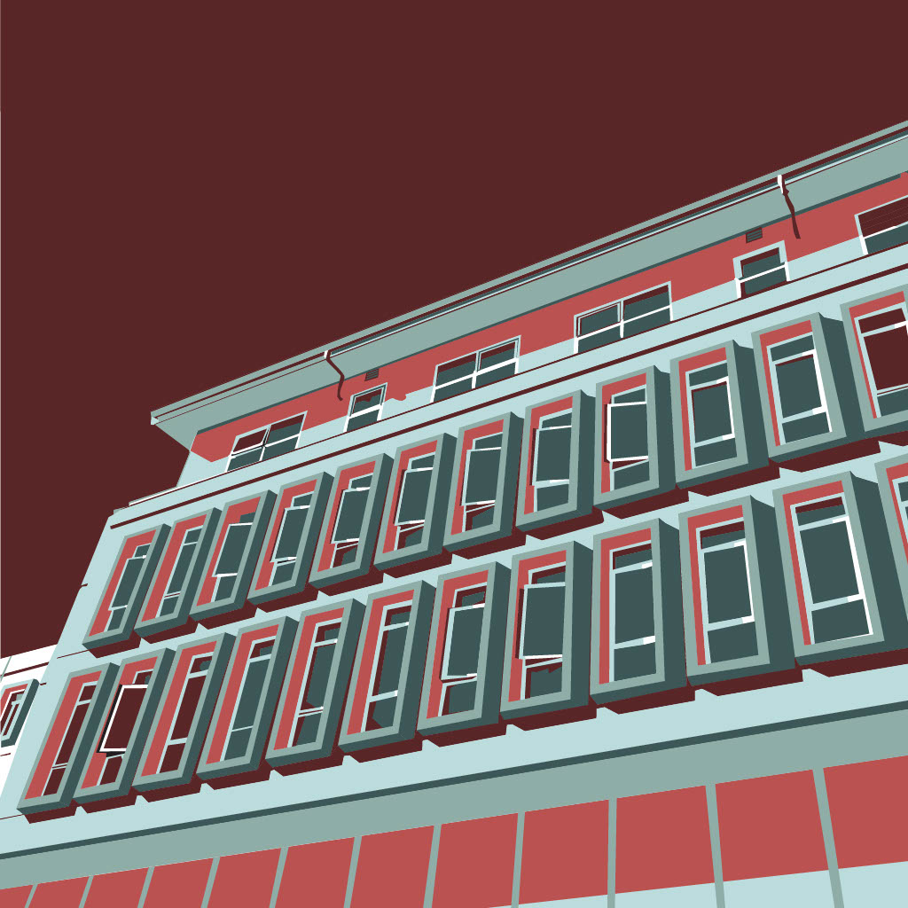
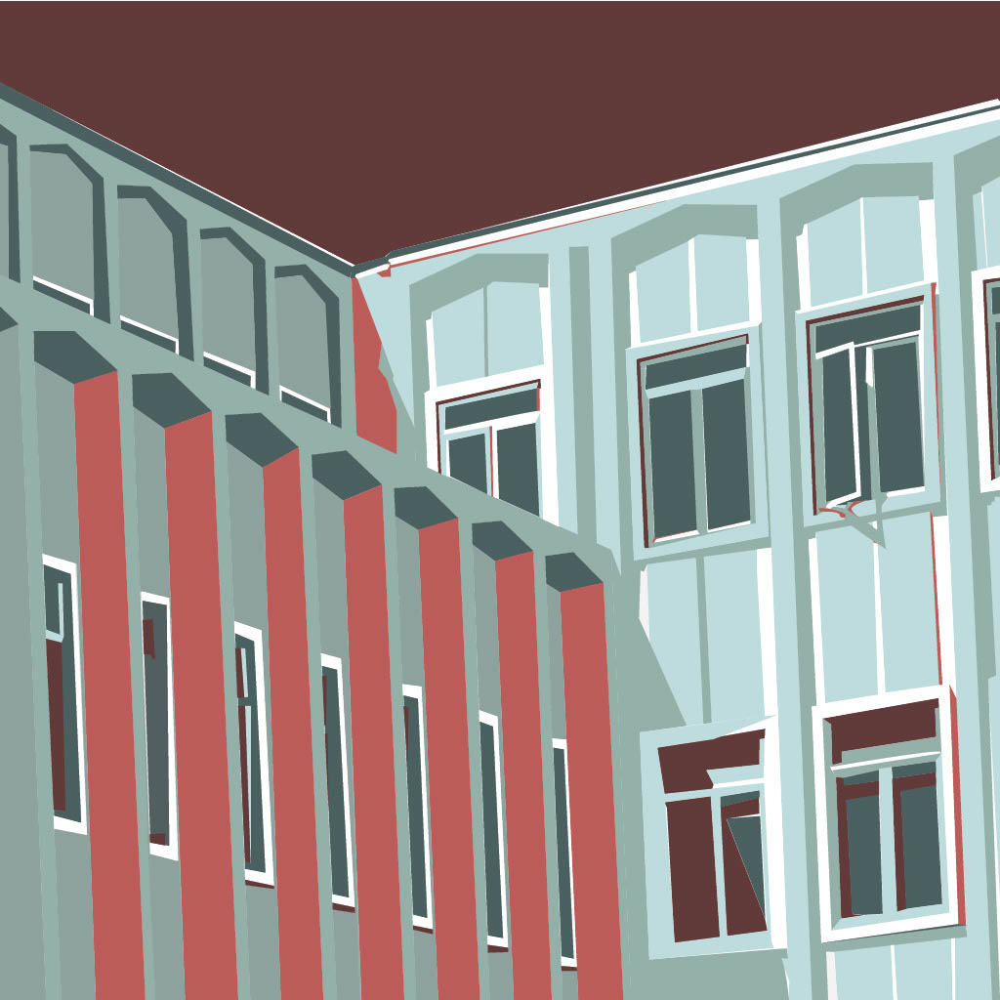
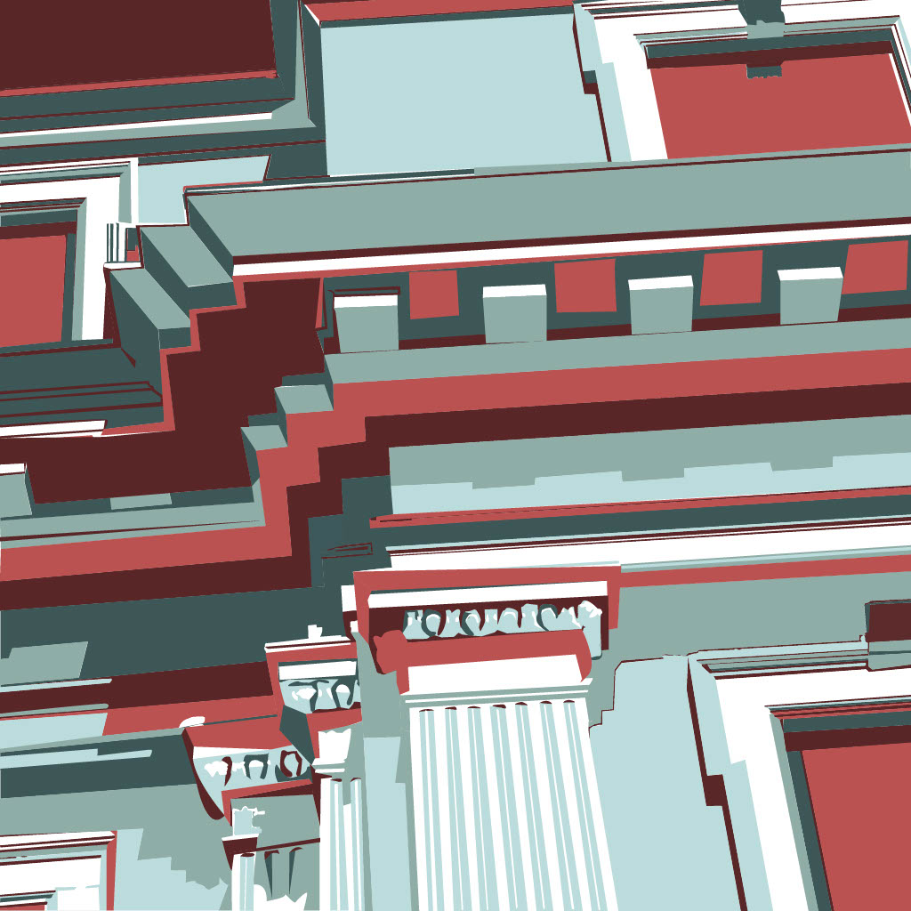
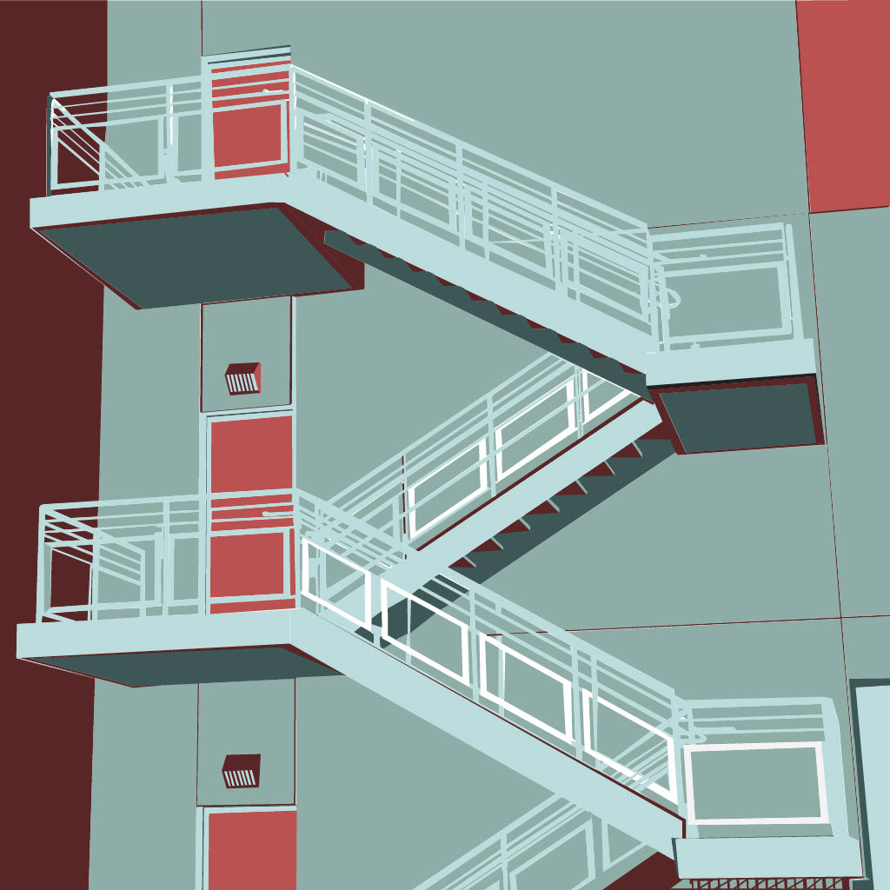
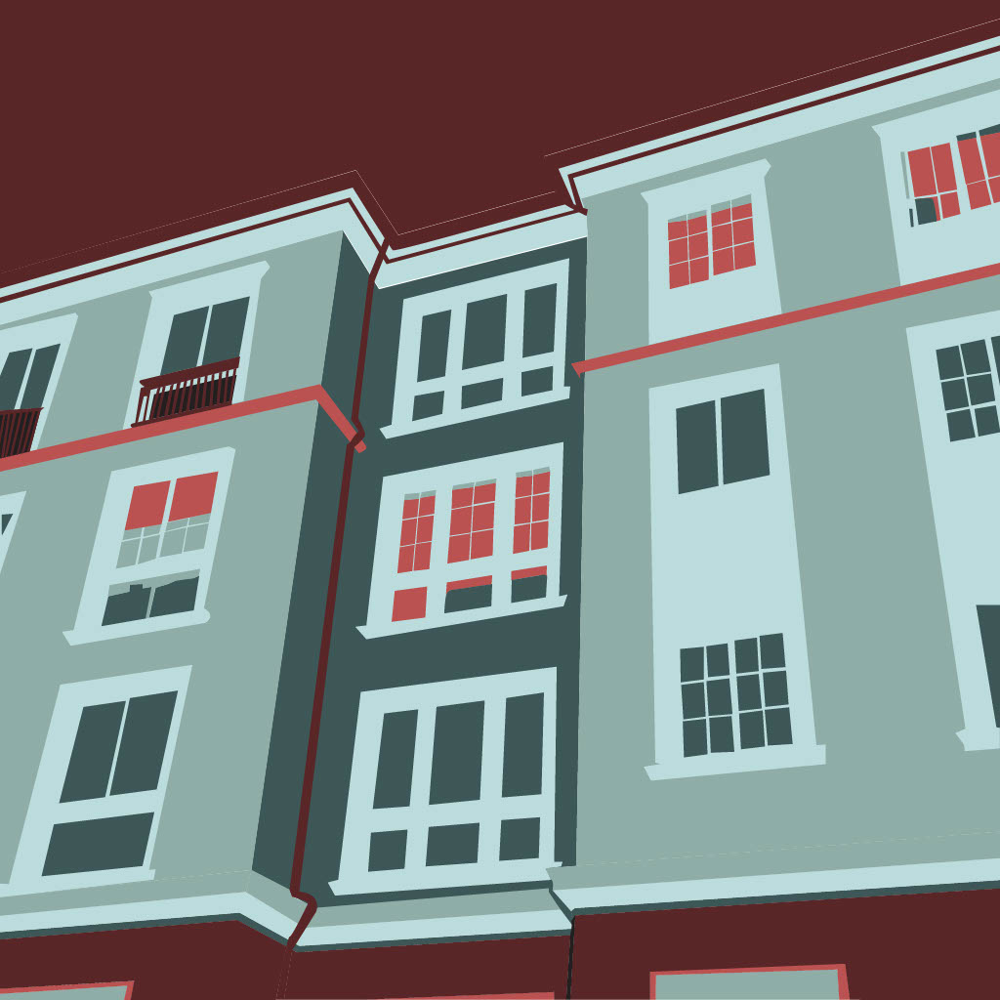
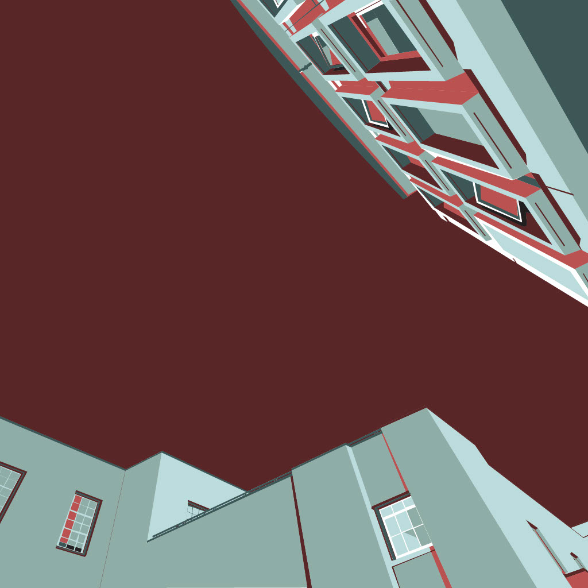
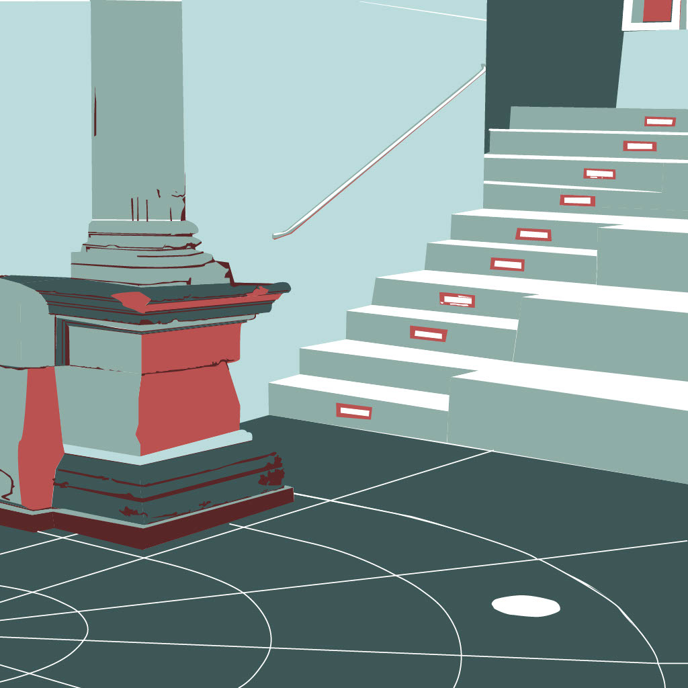
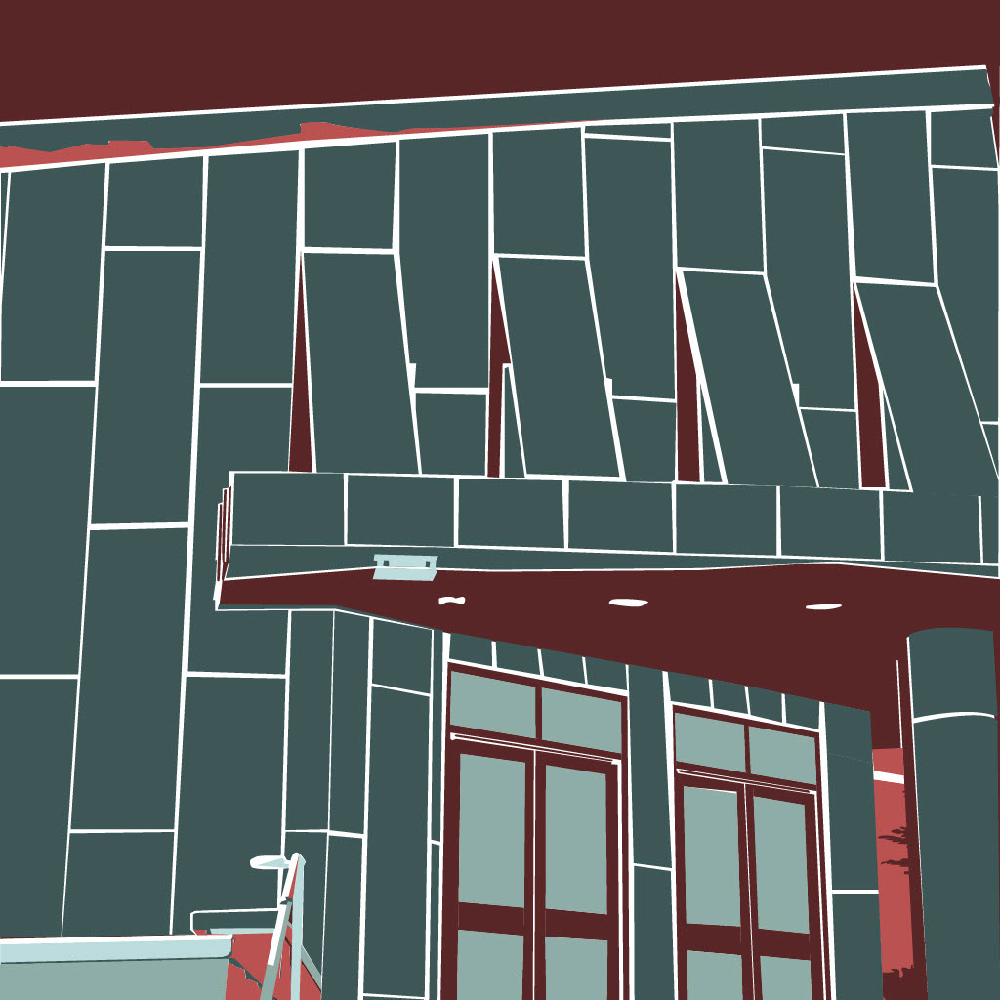
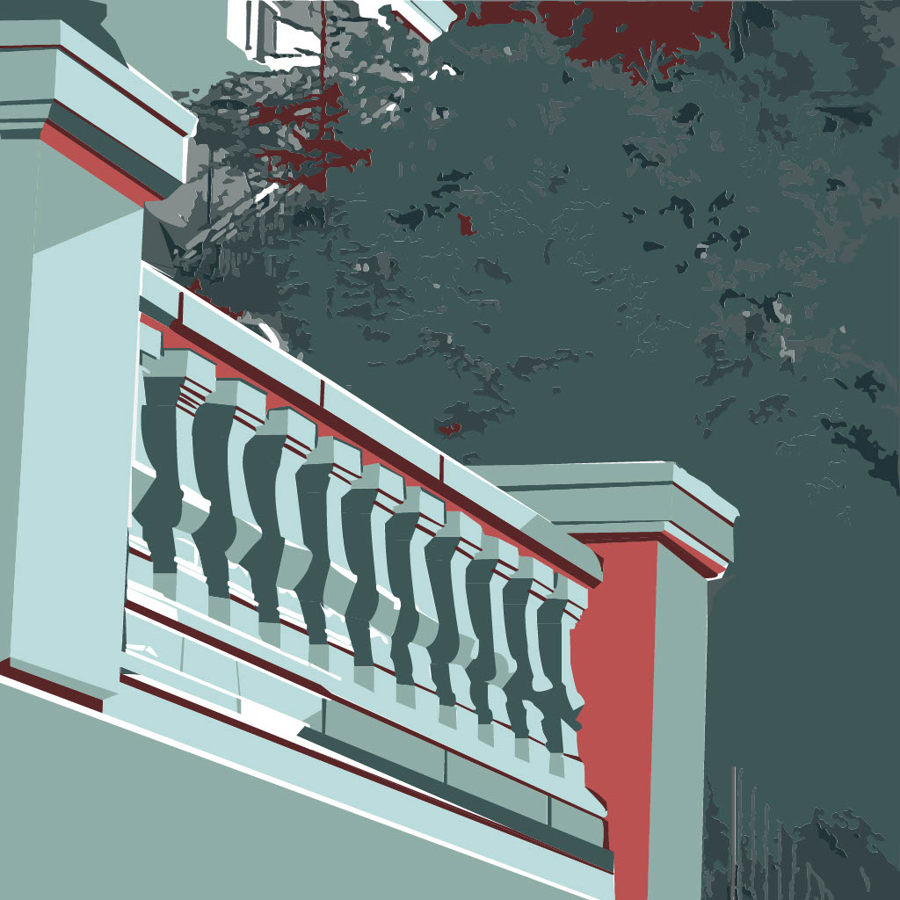

Sonia Goveas
architecture abstracted
This illustration series captures quiet moments around the University of San Francisco campus, rendered entirely in Adobe Illustrator. I worked within a self-imposed palette of five colors and minimal amounts of white. Each tone is inspired by the soft, timeworn hues of San Francisco’s iconic Victorian homes. The palette evokes the constant presence of Karl the Fog and the way he softens the city’s edges, muting light, deepening shadows, and lending everything a quiet stillness. The result is a visual reflection of quiet character that is quintessentially San Francisco.








